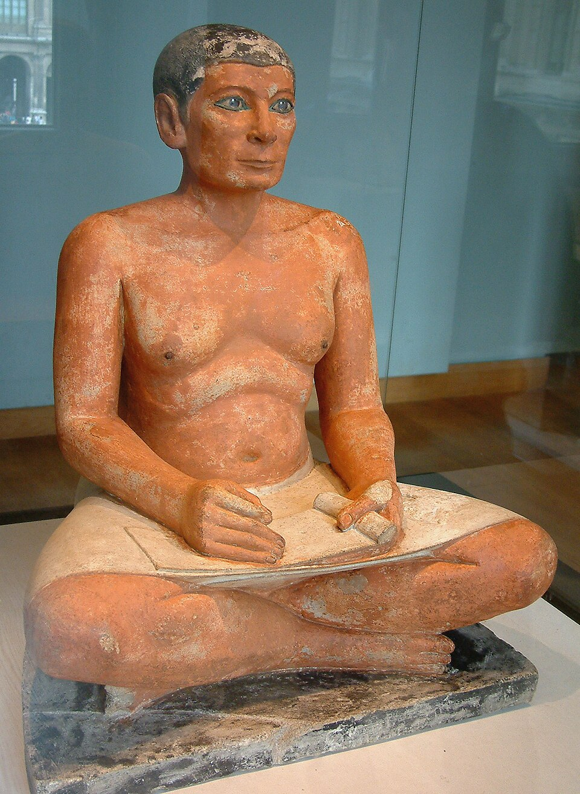

The Seated Scribe
Roughly 4,500 years old. His eyes — rock crystal set in copper — are what stop you: unnervingly alive, tracking you as you move. His name and title are lost. He holds a papyrus roll, alert, waiting for dictation to begin.
A quiet detail: scribes were usually shown as lean and attentive. This one has the soft belly of a prosperous life — a subtle boast by whoever commissioned him.